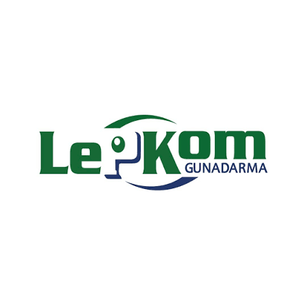

Assistant
Lembaga Pengembangan Komputerisasi Universitas Gunadarma
Aug 2025 – Present
Contract, on-site, Depok, West Java, Indonesia
- Supported laboratory sessions for Database, Networking, Java, and Go courses by guiding students and troubleshooting technical issues.
- Mentored 100+ students in programming, database, and networking concepts through hands-on practical assistance.
- Evaluated practical assignments and provided constructive feedback to enhance students' technical skills and learning outcomes.

Data Analyst Intern
Kementerian Kelautan dan Perikanan Republik Indonesia
Aug 2026 – Oct 2026 (3 months)
Internship, on-site, Gambir, Jakarta, Indonesia
- Collected, validated, and cleaned data from multiple sources, while maintaining clear data documentation to ensure accuracy and consistency.
- Built interactive dashboards and presented analytical findings through structured reports and data visualizations (charts/graphs).
- Analyzed trends, patterns, and performance metrics, handled ad-hoc analytical requests, and delivered data-driven recommendations to stakeholders.
Research Assistant
Universitas Gunadarma
June 2026 – July 2026
Part-time, remote, Depok, West Java, Indonesia
- Conducted in-depth research in computer vision on two main projects: 3-level freshness classification of sea snakehead fish (MobileNetV2) and face detection on a multi-condition dataset (YOLOv8 & CNN).
- Intensively mentored students in translating research theory into functional programs, from the data preprocessing stage through to code implementation.
- Ensured the quality of technological outputs and intelligent programs to meet scientific validation standards, ready for presentation at students’ Scientific Research (PI) defense sessions.